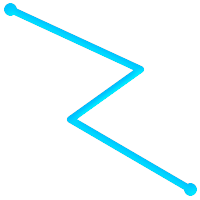
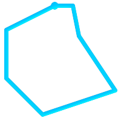
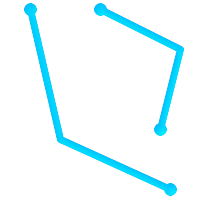
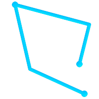
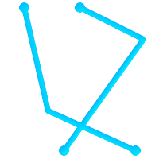
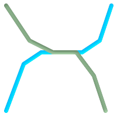
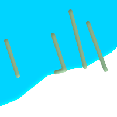

PostGISでサポートされるGISオブジェクトは、OpenGIS Consortium (OGC)が定義する"Simple Features" のスーパーセットです。 PostGISはOGCの"Simple Features for SQL"仕様で定められた全てのオブジェクトと関数に対応しています。
PostGISは標準から拡張して 3DZ, 3DM, 4次元 (訳注: それぞれXYZ, XYM, XYZM)座標に対応しています。
OpenGIS仕様は空間オブジェクトの表現について二つの標準を定義しています。Well-Knownテキスト (WKT)形式とWell-Knownバイナリ (WKB)形式です。WKTもWKBも、オブジェクトの型とオブジェクトを形成する座標に関する情報を持っています。
フィーチャーの空間オブジェクトのテキスト表現 (WKT)の例は、次の通りです。
POINT(0 0)
LINESTRING(0 0,1 1,1 2)
POLYGON((0 0,4 0,4 4,0 4,0 0),(1 1, 2 1, 2 2, 1 2,1 1))
MULTIPOINT((0 0),(1 2))
MULTILINESTRING((0 0,1 1,1 2),(2 3,3 2,5 4))
MULTIPOLYGON(((0 0,4 0,4 4,0 4,0 0),(1 1,2 1,2 2,1 2,1 1)), ((-1 -1,-1 -2,-2 -2,-2 -1,-1 -1)))
GEOMETRYCOLLECTION(POINT(2 3),LINESTRING(2 3,3 4))
OpenGIS仕様では、空間オブジェクトの内部保存書式は空間参照系識別子 (Spatial Referencing System IDentifier, SRID)を含むことも求められます。SRIDはデータベースへの挿入のために空間オブジェクトが生成される時に求められます。
これらの書式の入出力は次のインタフェースを用いて実現できます。
バイト配列 WKB = ST_AsBinary(geometry); テキスト WKT = ST_AsText(geometry); ジオメトリ = ST_GeomFromWKB (bytea WKB、SRID); ジオメトリ = ST_GeometryFromText (テキスト WKT、SRID);
たとえば、OGC空間オブジェクトを生成して挿入する妥当なINSERTステートメントは次の通りです。
INSERT INTO geotable ( the_geom, the_name )
VALUES ( ST_GeomFromText('POINT(-126.4 45.32)', 312), 'A Place');OGC書式は2次元ジオメトリしかサポートされておらず、また、入出力の表現においてSRIDは*決して*埋め込まれません。
PostGIS拡張書式は現在のところOGC書式のスーパーセットとなっています (全ての妥当なWKB/WKTは妥当なEWKB/EWKTです)。しかし、特にもしOGCがPostGIS拡張と矛盾する新しい書式を出すことがあるなら、これは将来変更されるかも知れません。ゆえにこの機能に頼るべきではありません。
PostGIS EWKB/EWKT では 3DM, 3DZ, 4D の座標サポートが追加され、SRID情報が埋め込まれます。
拡張された空間オブジェクトのテキスト表現 (EWKT)の例は、次の通りです。
POINT(0 0 0) -- XYZ
SRID=32632;POINT(0 0) -- SRID付きXY
POINTM(0 0 0) -- XYM
POINT(0 0 0 0) -- XYZM
SRID=4326;MULTIPOINTM(0 0 0,1 2 1) -- SRID付きXYM
MULTILINESTRING((0 0 0,1 1 0,1 2 1),(2 3 1,3 2 1,5 4 1))
POLYGON((0 0 0,4 0 0,4 4 0,0 4 0,0 0 0),(1 1 0,2 1 0,2 2 0,1 2 0,1 1 0))
MULTIPOLYGON(((0 0 0,4 0 0,4 4 0,0 4 0,0 0 0),(1 1 0,2 1 0,2 2 0,1 2 0,1 1 0)),((-1 -1 0,-1 -2 0,-2 -2 0,-2 -1 0,-1 -1 0)))
GEOMETRYCOLLECTIONM( POINTM(2 3 9), LINESTRINGM(2 3 4, 3 4 5) )
MULTICURVE( (0 0, 5 5), CIRCULARSTRING(4 0, 4 4, 8 4) )
POLYHEDRALSURFACE( ((0 0 0, 0 0 1, 0 1 1, 0 1 0, 0 0 0)), ((0 0 0, 0 1 0, 1 1 0, 1 0 0, 0 0 0)), ((0 0 0, 1 0 0, 1 0 1, 0 0 1, 0 0 0)), ((1 1 0, 1 1 1, 1 0 1, 1 0 0, 1 1 0)), ((0 1 0, 0 1 1, 1 1 1, 1 1 0, 0 1 0)), ((0 0 1, 1 0 1, 1 1 1, 0 1 1, 0 0 1)) )
TRIANGLE ((0 0, 0 9, 9 0, 0 0))
TIN( ((0 0 0, 0 0 1, 0 1 0, 0 0 0)), ((0 0 0, 0 1 0, 1 1 0, 0 0 0)) )
これらの書式の変換は次のインタフェースを用いて実現できます。
バイト配列 EWKB = ST_AsEWKB(geometry); テキスト EWKT = ST_AsEWKT(geometry); ジオメトリ = ST_GeomFromEWKB(bytea EWKB); ジオメトリ = ST_GeomFromEWKT(text EWKT);
たとえば、PostGISの空間オブジェクトを作成し挿入する妥当なINSERTステートメントは次の通りです。
INSERT INTO geotable ( the_geom, the_name )
VALUES ( ST_GeomFromEWKT('SRID=312;POINTM(-126.4 45.32 15)'), 'A Place' )PostgreSQLの「標準的な形式」は単純なクエリ (全く関数呼び出しが無い)で得る表現であり、単純なINSERT, UPDATE, COPYで受け付けられることが保障されるものです。PostGISの"geometory"型の場合は次の通りです。
- 出力
- バイナリ: EWKB
ascii: HEXEWKB (EWKBのHEX表現)
- 入力
- バイナリ: EWKB
ascii: HEXEWKB|EWKT たとえば、次のステートメントは、標準的なASCII文字列による入出力の処理でEWKTを読み、HEXEWKBを返すものです。
=# SELECT 'SRID=4;POINT(0 0)'::geometry; geometry ---------------------------------------------------- 01010000200400000000000000000000000000000000000000 (1 row)
SQLマルチメディア・アプリケーション空間仕様は、円弧補完曲線を定義したSQL仕様の拡張です。
SQL-MMの定義では、3DM、3DZと4Dの座標を含みますが、SRID情報の埋め込みはできません。
Well-Known Text拡張はまだ完全にはサポートされていません。単純な曲線ジオメトリの例を次に示します。
CIRCULARSTRING(0 0, 1 1, 1 0)
CIRCULARSTRING(0 0, 4 0, 4 4, 0 4, 0 0)
CIRCULARSTRINGは基本的な曲線型で、線型のLINESTRINGに似ています。一つの辺で、始点、終点 (一つめと三つめ)と弧上の任意の点、の3点が必要です。例外として、始点と終点が同じとなる閉曲線があります。閉曲線では二つ目の点が弧の中心、すなわち円の反対側にならなければなりません。弧の連結では、LINESTRINGと同じように、前の弧の最後の点が次の弧の最初の点となります。よって、妥当なCIRCULARSTRINGは1以上の奇数になります。
COMPOUNDCURVE(CIRCULARSTRING(0 0, 1 1, 1 0),(1 0, 0 1))
複合曲線は、曲線 (円弧)セグメントと線型セグメントの両方を持つ、単一の連続した曲線です。 よって、要素が的確である必要があることに加え、各要素 (最終要素は除く)の終点は次の要素の始点と同じになる必要があります。
CURVEPOLYGON(CIRCULARSTRING(0 0, 4 0, 4 4, 0 4, 0 0),(1 1, 3 3, 3 1, 1 1))
曲線ポリゴンの中に複合ポリゴンがある例は次の通りです。 CURVEPOLYGON(COMPOUNDCURVE(CIRCULARSTRING(0 0,2 0, 2 1, 2 3, 4 3),(4 3, 4 5, 1 4, 0 0)), CIRCULARSTRING(1.7 1, 1.4 0.4, 1.6 0.4, 1.6 0.5, 1.7 1) )
CURVEPOLYGONは外環と0以上の内環とを持つ点でPOLYGONと似ています。 異なる点は、環に曲線ストリング、線型ストリング、複合ストリングのいずれも取れる点です。
PostGIS 1.4から、PostGISで曲線ポリゴンで複合曲線をサポートするようになりました。
MULTICURVE((0 0, 5 5),CIRCULARSTRING(4 0, 4 4, 8 4))
MULTICURVEは曲線のコレクションで、線型ストリング、曲線ストリング、複合ストリングを取れます。
MULTISURFACE(CURVEPOLYGON(CIRCULARSTRING(0 0, 4 0, 4 4, 0 4, 0 0),(1 1, 3 3, 3 1, 1 1)),((10 10, 14 12, 11 10, 10 10),(11 11, 11.5 11, 11 11.5, 11 11)))
サーフェスのコレクションです。(線型)ポリゴンか曲線ポリゴンを取れます。
![[注記]](images/note.png) | |
SQL-MM実装での全ての浮動小数点数の比較では、所定の丸め誤差があります。現在は1E-8です。 |
ジオグラフィ型は、「地理」座標 (しばしば「測地」座標、"lat/lon"、"lon/lat"、緯度経度, 経度緯度などとも呼ばれます)上で表現された空間フィーチャーのネイティブサポートするためのものです。地理座標は角度の単位 (度)で表現される球面座標です。
PostGISジオメトリ型の基礎は平面です。平面上の二点間の最短コースは直線になります。よって、ジオメトリ上の計算 (面積、距離、長さ、インタセクション等)は、デカルト座標と線型ベクトルを使用することができます。
PostGISのジオグラフィ型の基礎は球面です。球面上での二点間の最短距離は大圏の弧です。よって、ジオグラフィ上の計算 (面積、距離、長さ、インタセクション等)は、球面上で計算しなければならず、複雑な計算が必要となります。より正確な計測のためには、世界の実際の回転楕円体の形を考慮に入れなければならず、非常に複雑です。
基礎となる数学が大変に複雑なので、ジオグラフィ型用に定義された関数は、ジオメトリ型よりも少ないです。時間とともに、新しいアルゴリズムが追加されて、ジオグラフィ型の能力は拡大していくでしょう。
geographyと呼ばれるデータ型を使用します。GEOS関数はgeography型に対応していません。回避策として、ジオメトリとジオグラフィの型変換を行うことができます。
PostGIS 2.2より前は、ジオグラフィ型はWGS84経度緯度 (SRID:4326)だけに対応していました。PostGIS 2.2以降は、spatial_ref_sysで定義されている経度緯度ベースの空間参照系の全てが使えます。geography type is not limited to earthの記述にある通り、独自の回転楕円体の空間参照系を追加することもできます。
どの空間参照系を使用しても、計測関数 (ST_Distance, ST_Length, ST_Perimeter, ST_Area)の返り値の単位と、ST_DWithinの入力の単位はメートルです。
ジオグラフィ型はPostgreSQLのtypmod定義書式を使います。ジオグラフィカラムを持つテーブルに1ステップで追加できます。標準OGC書式は曲線を除いてサポートします。
ジオグラフィ型はシンプルフィーチャーの最も簡単なもののみサポートします。標準的なジオメトリ型データで、SRIDが4326の場合は、ジオグラフィに自動でキャストされます。またデータ挿入においてEWKTとEWKBの取り決めを使うこともできます。
POINT: SRID指定なしでの2次元ポイントジオグラフィのテーブル生成は次の通りです。デフォルトは4326 WGS84経度緯度となります。
CREATE TABLE ptgeogwgs(gid serial PRIMARY KEY, geog geography(POINT) );
POINT: NAD83経度緯度での2次元ポイントジオグラフィのテーブル生成は次の通りです。
CREATE TABLE ptgeognad83(gid serial PRIMARY KEY, geog geography(POINT,4269) );
Z値を持ち、明示的にSRIDを指定したポイントのテーブル生成は次の通りです。
CREATE TABLE ptzgeogwgs84(gid serial PRIMARY KEY, geog geography(POINTZ,4326) );
LINESTRING
CREATE TABLE lgeog(gid serial PRIMARY KEY, geog geography(LINESTRING) );
POLYGON
-- ポリゴン NAD 1927経度緯度 CREATE TABLE lgeognad27(gid serial PRIMARY KEY, geog geography(POLYGON,4267) );
MULTIPOINT
MULTILINESTRING
MULTIPOLYGON
GEOMETRYCOLLECTION
ジオグラフィ型のフィールドはgeography_columnsシステムビューに登録されます。
"geography_columns"ビューをチェックして、テーブルが一覧にあるか見て下さい。
CREATE TABLEの文法でジオグラフィカラムを持つテーブルを新規に生成できます。
CREATE TABLE global_points (
id SERIAL PRIMARY KEY,
name VARCHAR(64),
location GEOGRAPHY(POINT,4326)
);
locationカラムはジオグラフィ型で、二つの任意修飾子に対応していることにご注意ください。一つは、そのカラムで使用できる形状と次元を限定する型修飾子です。もう一つは、座標参照IDを特定の数に限定するSRID修飾子です。
型修飾子として受け付ける値は、POINT, LINESTRING, POLYGON, MULTIPOINT, MULTILINESTRING, MULTIPOLYGONです。型修飾子は、Z, M, ZMの後置子を付けることで次元制限にも対応します。たとえば、'LINESTRINGM'という型修飾子で、三つ目の次元をMとする3次元のラインストリングのみ受け付けることになります。同じように'POINTZM'で、4次元データを期待します。
SRIDを指定していない場合には、SRIDは4326 WGS84経度緯度が使われ、全ての計算はWGS 84を使って行われます。
テーブルを作ったら、次のようにしてGEOGRAPHY_COLUMNSを見ることができます。
-- メタデータビューの中身を見る SELECT * FROM geography_columns;
ジオメトリカラムを使うのと同じようにテーブルへのデータの挿入ができます。
-- testテーブルにデータを追加する
INSERT INTO global_points (name, location) VALUES ('Town', 'SRID=4326;POINT(-110 30)');
INSERT INTO global_points (name, location) VALUES ('Forest', 'SRID=4326;POINT(-109 29)');
INSERT INTO global_points (name, location) VALUES ('London', 'SRID=4326;POINT(0 49)');ジオメトリと同じ操作でインデックスを作成します。PostGISは、カラム型がジオグラフィであるかを見て、ジオメトリで使われる平面用インデックスの代わりに球面ベースのインデックスを作成します。
-- testテーブルに球面インデックスを作成 CREATE INDEX global_points_gix ON global_points USING GIST ( location );
クエリと計測関数はメートル単位となります。そのため距離パラメータはメートル (面積の場合は平方メートル)単位となります。
-- 距離クエリの表示。ロンドンは1000km範囲外です SELECT name FROM global_points WHERE ST_DWithin(location, 'SRID=4326;POINT(-110 29)'::geography, 1000000);
ジオグラフィの威力については、シアトルからロンドンまで (LINESTRING(-122.33 47.606, 0.0 51.5))の飛行機がレイキャビク (POINT(-21.96 64.15))に最も近くなるときの距離を求めてみると分かります。
-- ジオグラフィを使った距離計算 (122.2km)
SELECT ST_Distance('LINESTRING(-122.33 47.606, 0.0 51.5)'::geography, 'POINT(-21.96 64.15)'::geography);
-- ジオメトリを使った計算 (13.3 "度")
SELECT ST_Distance('LINESTRING(-122.33 47.606, 0.0 51.5)'::geometry, 'POINT(-21.96 64.15)'::geometry);
異なる経度緯度座標系を試します。spatial_ref_sysテーブルで挙げられている経度緯度の空間参照系なら全て可能です。
-- NAD83経度緯度
SELECT 'SRID=4269;POINT(-123 34)'::geography;
geography
----------------------------------------------------
0101000020AD1000000000000000C05EC00000000000004140
(1 row)
-- NAD27経度緯度
SELECT 'SRID=4267;POINT(-123 34)'::geography;
geography
----------------------------------------------------
0101000020AB1000000000000000C05EC00000000000004140
(1 row)
-- メートル単位のNAD83 UTM、メートル単位の投影法ですのでエラーが出ます SELECT 'SRID=26910;POINT(-123 34)'::geography; ERROR: Only lon/lat coordinate systems are supported in geography. LINE 1: SELECT 'SRID=26910;POINT(-123 34)'::geography;
ジオグラフィ型は、レイキャビクとシアトル-ロンドン間の飛行機の大圏コースとの間の、球面上での本当に最も近い距離を計算します。
大圏コースマップ ジオメトリ型は、平面の世界地図上にプロットされたレイキャビクとシアトル-ロンドン間の直線とのデカルト距離という意味のない値を出します。結果の名目上の単位は「度」ですが、点間の本当の角度差にあっていませんので、「度」と言うこと自体不正確です。
ジオグラフィ型によって、経度緯度座標でデータを格納できるようになりましたが、ジオグラフィで定義されている関数が、ジオメトリより少ないのと、実行にCPU時間がかかる、というところが犠牲になっています。
選択した型が、期待する領域から出ないことを、ジオメトリ型にして使用する条件とすべきです。使用するデータは地球全体か、大陸か、州か、自治体か?
データが小さいエリア内におさまるなら、適切な投影を選択してジオメトリを使うのが、効率面でも機能面でも最も良い方法です。
データが地球全体か大陸なら、ジオグラフィで投影法の細かい問題を気にせずにシステムを構築できるでしょう。経度/緯度のデータを保存して、ジオグラフィで定義された関数使います。
投影法を理解していなくて、学習したくもなくて、かつ、ジオグラフィで使える関数が限られていることを受け入れるのなら、ジオグラフィを使った方が簡単です。単純にデータを経度/緯度でロードして、そこから進めて下さい。
ジオグラフィとジオメトリ間のサポート状況の比較については「PostGIS関数対応マトリクス」をご覧下さい。ジオグラフィ関数の簡潔なリストと説明については「PostGISジオグラフィ対応関数」をご覧下さい。
- 4.2.3.1. 球または回転楕円体のどちらで計算するのでしょうか?
- 4.2.3.2. 日付変更線や極に関してはどうなっていますか?
- 4.2.3.3. 処理できる最も長い弧はどうなりますか?
- 4.2.3.4. なぜヨーロッパやロシアといった大きな範囲の面積計算はとても遅いのですか?
4.2.3.1. | 球または回転楕円体のどちらで計算するのでしょうか? |
デフォルトでは、全ての距離と面積の計算は回転楕円体で行います。局所的なエリアでの計算結果と良好な投影を施した平面での結果と比較して下さい。大きなエリアの場合は、回転楕円体計算は、投影平面上でのどの計算よりも精度が高くなります。 全てのジオグラフィ関数には、最後の真偽パラメータを'FALSE'にすると球面を使った計算を行うというオプションがあります。これは、特にジオメトリが非常に単純である場合に計算を速くするためのものです。 | |
4.2.3.2. | 日付変更線や極に関してはどうなっていますか? |
全ての計算に日付変更線や極の概念がありません。座標は球 (経度/緯度)であるので、日付変更線とクロスする形状は、計算の観点からは、他のものと変わりありません。 | |
4.2.3.3. | 処理できる最も長い弧はどうなりますか? |
大圏の弧を2点の「補完線」として使用しています。任意の2点は、実際には2方向につながっていて、どちらの方向に行くかに依存します。PostGISの全てのコードは、大圏コースの2コースのうち*短い*方でつながっていると仮定しています。結果として、180度以上の弧を持つ形状は正しくモデル化されません。 | |
4.2.3.4. | なぜヨーロッパやロシアといった大きな範囲の面積計算はとても遅いのですか? |
ポリゴンがとんでもなく大きいからです。二つの理由から、大きなエリアは悪いです。一つは、バウンダリボックスが大きいため、どのようなクエリを走らせても、インデックスがフィーチャーを引っ張ってくる傾向にあるためです。もう一つは、頂点数が巨大で、テスト (距離、包含)関数では、少なくとも1回、通常はN (Nは、もう一方のフィーチャーの頂点数)回、頂点を横断しなければならないためです。 ジオメトリでは、大きなポリゴンを持っているけれども小さな範囲のクエリを実行する時、ジオメトリデータ情報を小片に「非正規化」します。これにより、インデックスが効果的にオブジェクトの一部を問い合わせるようになり、またクエリが常にオブジェクト全体を引っ張りこむようなことがないようになります。ST_Subdivideを参照して下さい。ヨーロッパ全体を一つのポリゴンに*格納できる*からといって、*そうすべき*だというわけではありません。 |
OpenGISの「SQL用シンプルフィーチャー仕様」では、標準GISオブジェクト型とこれらを操作するために必要な関数、メタデータテーブルのセットが定義されています。メタデータが一貫性を維持していることを保証するために、空間カラムの生成、消去といった操作はOpenGISで定義されている空間プロシージャを通して実行されます。
OpenGISメタデータテーブルにはSPATIAL_REF_SYSとGEOMETRY_COLUMNSの二つがあります。SPATIAL_REF_SYSテーブルは空間データベースで用いられる座標系の、数字によるIDと文字による説明を持っています。
spatial_ref_sysテーブルは、PostGISに含まれるもので、3000以上の空間参照系と、座標変換/投影変換を行うのに必要な詳細情報との一覧を持つ、OGC準拠のデータベーステーブルです。
PostGISのspatial_ref_sysテーブルには、projライブラリで使われる3000以上の一般に使われる空間参照系定義がありますが、全てを持っているわけではなく、proj4の構築に慣れているならカスタム投影を定義することができます。ほとんどの空間参照系は地域限定のもので、想定されている範囲の外で使うと意味が無いことに注意して下さい。
PostGISのコアセットに入っていない空間参照系を探すための素晴らしい資料がhttp://spatialreference.org/にあります。
よく共通的に使われる空間参照系は次の通りです (訳注: 日本では状況が異なります)。4326 - WGS 84 経度緯度、4269 - NAD 83 経度緯度、3395 - WGS 84 メルカトル図法、2163 - 米国ナショナルアトラス正積図法、NAD83とWGS84のUTM空間参照系 - UTMゾーンは計測に最も理想的なものの一つですが6度 (訳注: 経度)の領域しかカバーしません。
まざまな米国の州の平面空間参照系 (メートルまたはフィート単位) - 通常は州ごとに一つか二つあります。メートル単位のもののほとんどがPostGISのコアセットに入っていますが、多数のフィート単位のものやESRIが作ったものについてはspatialreference.orgから取得して下さい。
対象領域がどのUTMゾーンになるかを決めるには、utmzone PostGIS plpgsql helper functionを参照して下さい。
SPATIAL_REF_SYSテーブル定義は次の通りです。
CREATE TABLE spatial_ref_sys ( srid INTEGER NOT NULL PRIMARY KEY, auth_name VARCHAR(256), auth_srid INTEGER, srtext VARCHAR(2048), proj4text VARCHAR(2048) )
SPATIAL_REF_SYSのカラムは次の通りです。
- SRID
一意に定められた整数値で、データベースで空間参照系 (SRS)を識別するものです。
- AUTH_NAME
その参照系の引用元である標準の名前です。たとえば「EPSG」は妥当な
AUTH_NAMEです。- AUTH_SRID
AUTH_NAMEで引用される団体によって定義された空間参照系のIDです。EPSGの場合、EPSG投影コードが入ります。- SRTEXT
空間参照系のWell-Knownテキスト表現です。たとえば、WKT SRSの表現は、次のようになります。
PROJCS["NAD83 / UTM Zone 10N", GEOGCS["NAD83", DATUM["North_American_Datum_1983", SPHEROID["GRS 1980",6378137,298.257222101] ], PRIMEM["Greenwich",0], UNIT["degree",0.0174532925199433] ], PROJECTION["Transverse_Mercator"], PARAMETER["latitude_of_origin",0], PARAMETER["central_meridian",-123], PARAMETER["scale_factor",0.9996], PARAMETER["false_easting",500000], PARAMETER["false_northing",0], UNIT["metre",1] ]EPSG投影コードと対応するWKT表現の一覧については、http://www.opengeospatial.org/をご覧下さい。WKTの一般的な議論については、OpenGISのhttp://www.opengeospatial.org/standardsにある「座標変換サービス実装仕様」をご覧下さい。欧州石油調査グループ(European Petroleum Survey Group, EPSG)とEPSG空間参照系のデータベースに関する情報は、http://www.epsg.org/をご覧下さい。
- PROJ4TEXT
PostGISは座標変換機能を提供するためにProj4ライブラリを用いています。
PROJ4TEXTカラムには、特定のSRIDを示すProj4座標定義文字列が入ります。たとえば次のようになります。+proj=utm +zone=10 +ellps=clrk66 +datum=NAD27 +units=m
詳細情報については、Proj4ウェブサイトhttp://trac.osgeo.org/proj/をご覧下さい。
spatial_ref_sys.sqlは、全てのEPSG投影法のためのSRTEXTとPROJ4TEXTとを持っています。
GEOMETRY_COLUMNSは、データベースのシステムカタログから読み取るビューです。構造は次の通りです。
\d geometry_columns
View "public.geometry_columns"
Column | Type | Modifiers
-------------------+------------------------+-----------
f_table_catalog | character varying(256) |
f_table_schema | character varying(256) |
f_table_name | character varying(256) |
f_geometry_column | character varying(256) |
coord_dimension | integer |
srid | integer |
type | character varying(30) |カラムの意味は次の通りです。
- F_TABLE_CATALOG, F_TABLE_SCHEMA, F_TABLE_NAME
ジオメトリカラムを持つフィーチャーテーブルの完全修飾名。"catalog"および"schema"の語はOracle風であることに注意して下さい。"catalog"に類似するものはPostgreSQLになく、このカラムは空白にされます。"schema"についてはPostgreSQLスキーマ名が使われています (
publicがデフォルトです)。- F_GEOMETRY_COLUMN
フィーチャーテーブル内のジオメトリカラムの名前。
- COORD_DIMENSION
そのカラムの空間の次元 (2, 3 または 4)。
- SRID
このテーブルの座標ジオメトリのために使われる空間参照系のID。
SPATIAL_REF_SYSへの外部キーになっています。- TYPE
空間オブジェクトの型。空間カラムを単一型に制限するには、POINT、LINESTRING、POLYGON、MULTIPOINT、MULTILINESTRING、MULTIPOLYGON、GEOMETRYCOLLECTIONのうちのいずれかを、また、XYMで使う場合には、LINESTRINGM、POLYGONM、MULTIPOINTM、MULTILINESTRINGM、MULTIPOLYGONM、GEOMETRYCOLLECTIONMのうちのいずれかを使います。複数の型が混合するコレクションの場合は"GEOMETRY"を型とすることができます。
この属性は (おそらく)OpenGIS仕様に入っていませんが、型の同一性を保証するために必要です。
空間データを持つテーブルの生成は、1段階でできます。2次元ラインストリングでWGS84経度緯度のジオメトリカラムを持つroadsテーブルの生成の例を次に示します。
CREATE TABLE ROADS (ID serial, ROAD_NAME text, geom geometry(LINESTRING,4326) );
次の、3次元ラインストリングを追加する例で示す通り、標準的なALTER TABLEコマンドを使ってカラムを追加できます。
ALTER TABLE roads ADD COLUMN geom2 geometry(LINESTRINGZ,4326);
これが必要になる事例に、SQLビューとバルクインサートの二つがあります。バルクインサートの場合には、カラムに制約を与えるか、ALTER TABLEを実行することで、geometry_columnsテーブル内の登録を訂正することができます。ビューの場合には、CAST演算を使用します。カラムが型修飾子に基づく場合には、生成処理によって正しく登録されるので、何も行う必要がありません。ジオメトリに適用する空間関数を持たないビューも、基礎となるテーブルのジオメトリカラムと同じように登録されます。
-- 次のようなビューがあるとします
CREATE VIEW public.vwmytablemercator AS
SELECT gid, ST_Transform(geom, 3395) As geom, f_name
FROM public.mytable;
-- 正しく登録するには、
-- ジオメトリをキャストします。
--
DROP VIEW public.vwmytablemercator;
CREATE VIEW public.vwmytablemercator AS
SELECT gid, ST_Transform(geom, 3395)::geometry(Geometry, 3395) As geom, f_name
FROM public.mytable;
-- ジオメトリタイプが確実に2次元ポリゴンだと知っているなら
-- 次のようにできます。
DROP VIEW public.vwmytablemercator;
CREATE VIEW public.vwmytablemercator AS
SELECT gid, ST_Transform(geom,3395)::geometry(Polygon, 3395) As geom, f_name
FROM public.mytable;-- 次のように、バルクインサートで派生テーブルを生成したとしましょう
SELECT poi.gid, poi.geom, citybounds.city_name
INTO myschema.my_special_pois
FROM poi INNER JOIN citybounds ON ST_Intersects(citybounds.geom, poi.geom);
-- 新しいテーブルに2次元インデックスを作ります
CREATE INDEX idx_myschema_myspecialpois_geom_gist
ON myschema.my_special_pois USING gist(geom);
-- ポイントが3次元ポイントであったり、XYMポイントであったりした場合には、
-- 次のように、2次元インデックスでなくN次元インデックスを作ることになるかも
-- 知れません。
CREATE INDEX my_special_pois_geom_gist_nd
ON my_special_pois USING gist(geom gist_geometry_ops_nd);
-- 新しいテーブルのジオメトリカラムをgeometry_columnsに手動登録するには、
-- 次のようにします。
-- カラムを型修飾子ベースにするために、基礎となるテーブル構造も変更することに
-- 注意して下さい。
SELECT populate_geometry_columns('myschema.my_special_pois'::regclass);
-- PostGIS 2.0を使っていて、何らかの理由で古い制約をもとにした定義を行う
-- (派生テーブルが同じタイプやSRIDを持たないといった場合)ことが必要な場合には、
-- 新しい任意変数use_typemodをfalseにします。
SELECT populate_geometry_columns('myschema.my_special_pois'::regclass, false); 古い制約を基にした手法は現在も対応していますが、制約を基にしたジオメトリカラムで直接的にビューで使われている場合は、型修飾子のようには正しくgeometry_columnsに登録されません。次の例では、型修飾子を使ったカラム定義と、制約に基づくカラムの定義とを行っています。
CREATE TABLE pois_ny(gid SERIAL PRIMARY KEY, poi_name text, cat text, geom geometry(POINT,4326));
SELECT AddGeometryColumn('pois_ny', 'geom_2160', 2160, 'POINT', 2, false);psqlで次を実行します。
\d pois_ny;
型修飾子と制約に基づくのとでは異なった定義になっているのが見えます。
Table "public.pois_ny"
Column | Type | Modifiers
-----------+-----------------------+------------------------------------------------------
gid | integer | not null default nextval('pois_ny_gid_seq'::regclass)
poi_name | text |
cat | character varying(20) |
geom | geometry(Point,4326) |
geom_2160 | geometry |
Indexes:
"pois_ny_pkey" PRIMARY KEY, btree (gid)
Check constraints:
"enforce_dims_geom_2160" CHECK (st_ndims(geom_2160) = 2)
"enforce_geotype_geom_2160" CHECK (geometrytype(geom_2160) = 'POINT'::text
OR geom_2160 IS NULL)
"enforce_srid_geom_2160" CHECK (st_srid(geom_2160) = 2160)geometry_columnsでは、両方とも正しく登録されています。
SELECT f_table_name, f_geometry_column, srid, type
FROM geometry_columns
WHERE f_table_name = 'pois_ny';f_table_name | f_geometry_column | srid | type -------------+-------------------+------+------- pois_ny | geom | 4326 | POINT pois_ny | geom_2160 | 2160 | POINT
しかし、次のようにビューを作ろうとします。
CREATE VIEW vw_pois_ny_parks AS
SELECT *
FROM pois_ny
WHERE cat='park';
SELECT f_table_name, f_geometry_column, srid, type
FROM geometry_columns
WHERE f_table_name = 'vw_pois_ny_parks';型修飾子によるgeomのビューカラムは正しく登録されますが、制約に基づくものは正しく登録されません。
f_table_name | f_geometry_column | srid | type ------------------+-------------------+------+---------- vw_pois_ny_parks | geom | 4326 | POINT vw_pois_ny_parks | geom_2160 | 0 | GEOMETRY
これは、将来的にPostGISの版で変更されるかもしれませんが、今のところは、制約に基づくビューカラムを正しく登録させるには、次のようにします。
DROP VIEW vw_pois_ny_parks;
CREATE VIEW vw_pois_ny_parks AS
SELECT gid, poi_name, cat,
geom,
geom_2160::geometry(POINT,2160) As geom_2160
FROM pois_ny
WHERE cat = 'park';
SELECT f_table_name, f_geometry_column, srid, type
FROM geometry_columns
WHERE f_table_name = 'vw_pois_ny_parks';f_table_name | f_geometry_column | srid | type ------------------+-------------------+------+------- vw_pois_ny_parks | geom | 4326 | POINT vw_pois_ny_parks | geom_2160 | 2160 | POINT
PostGISはOpen Geospatial Consortium (OGC)のOpenGIS仕様に準拠しています。多くのPostGISメソッドは、操作対象のジオメトリが単純かつ妥当であることが求められます (正確に言うとそう仮定します)。たとえば、ポリゴンの外に穴があるようなものの面積を計算したり、単純でない境界線を持つポリゴンを作ったりするのは、意味がありません。
OGS仕様に沿うと、単純なジオメトリとは、自己インタセクトや自己接触のような、異常な幾何点を持たないことです。主に0次元または1次元のジオメトリ ([MULTI]POINT, [MULTI]LINESTRING))に適用します。 他方、ジオメトリの妥当性は、主に2次元ジオメトリ ([MULTI]POLYGON)に適用し、妥当なポリゴンを特徴づける位置指定子の集合を定義します。個々のジオメトリクラスには、単純性と妥当性をさらに詳細に述べる特定の条件があります。
POINTは0次元ジオメトリオブジェクトとして常に単純です。
MULTIPOINTは、二つの座標値 (POINT)が同じでないなら単純です。
LINESTRINGは、2度同じPOINTを通らない (終点は除きます。この場合は線型環と呼ばれ、さらに言うと閉じていると思われます)なら単純です。
 (a) | (b) |
 (c) | (d) |
(a)と(c)は単純な |
MULTILINESTRINGは、 全ての要素が単純で、かつ任意の2要素のインタセクトが要素の境界であるPOINTでだけ発生する場合に限って単純です。
 (e) |  (f) |  (g) |
(e)と(f)は単純な |
定義からPOLYGONは常に単純です。バウンダリ内の環 (外環と内環からなる)のうち二つがクロスしていないなら妥当です。POLYGONの境界は、POINTとインタセクトするかも知れませんが、接点にしかなりません (すなわち線上にない)。POLYGONはカットラインまたはスパイクを持たなくても良く、内環は外環の中に完全に含まれていなければなりません。
(h) | (i) | (j) |
 (k) | (l) | (m) |
(h)と(i)は妥当な |
MULTIPOLYGONは、全ての要素が妥当で、二つのポリゴン要素について内側がインタセクトしていない場合は妥当です。ポリゴン要素の任意の二つの境界は接触してもよいですが、有限な数のPOINTでなければなりません。
(n) | (o) | (p) |
(n)と(o)は妥当でない |
GEOSライブラリを使って実装されている関数のほとんどは、ジオメトリがOpenGISシンプルフィーチャー仕様で定義されているように妥当であると仮定しています。ジオメトリが単純であるか、また妥当であるか、のチェックとしてST_IsSimple()とST_IsValid()が使えます。
-- 一般的に、線フィーチャーの妥当性のチェックは
-- 常にTRUEを返すので意味がありません
-- しかし、この例では、PostGISがOGCのIsValidの定義を拡張して
-- *一意な頂点*が2より少ないラインストリングについてFALSEを
-- 返すようにしています
gisdb=# SELECT
ST_IsValid('LINESTRING(0 0, 1 1)'),
ST_IsValid('LINESTRING(0 0, 0 0, 0 0)');
st_isvalid | st_isvalid
------------+-----------
t | fデフォルトでは、PostGISはジオメトリ入力に関するこの妥当性チェックを適用しません。複雑なジオメトリの妥当性のチェックはCPU時間を多く必要とするためです。データソースが信用できない場合は、手動でこのチェックを強制するための制約を付けることができます。
ALTER TABLE mytable
ADD CONSTRAINT geometry_valid_check
CHECK (ST_IsValid(the_geom));妥当な入力ジオメトリでPostGIS関数を呼んだのに「GEOS Intersection()がエラーを投げました!」というようなエラーメッセージに遭遇したなら、PostGISまたは使用しているライブラリの中のエラーを発見しました。PostGIS開発者に連絡するべきです。PostGIS関数が妥当である入力ジオメトリから妥当でないジオメトリが返る場合も同じです。
| |
厳格にOGCジオメトリに準拠すると、Z値やM値を持てません。ST_IsValid()は高次を考慮に入れません。AddGeometryColumn()を実行するとジオメトリの次元をチェックする制約が加わるので、そこで2を指定すれば十分です。 |
代表的な空間述語 (ST_Intersects, ST_Contains, ST_Crosses, ST_Touches, ...)は、求められる空間フィルタを適切に提供するには十分でないことが時々あります。
 たとえば、道路網を表現する線型のデータセットがあるとします。ビジネスルールを無視しているかも知れませんが、点で交差するだけでなく線上で交差する道路区間を全て判別することがGIS解析者の仕事となるかも知れません。この場合、 ST_Crossesでは重要な空間フィルタとして十分ではありません。線型のフィーチャーでは、点でクロス (訳注: インタセクトより厳しい条件です)している場合のみ 空間的にインタセクトしている (ST_Intersects)と判別された二つの区間の組み合わせについて、実際のインタセクト (ST_Intersection)を取り、 インタセクトのST_GeometryTypeが'' よりエレガントかつ速い解法が本当に望ましいでしょう。 |
 二つ目の[理論的な]例として、GIS解析者が全ての湖の境界に線でインタセクトする波止場やドックの全ての位置を特定しようとするとします。ここで、波止場の一端だけ陸にあるとします。言いかえると、波止場が湖の中にあるが完全に中に入りきってはいなくて、湖と線でインタセクトして、波止場の一方の端が完全に湖に入っていて、かつもう一方の端点が境界線上にあります。解析者は空間述語の組み合わせで、非常に望まれるフィーチャーを引き出す必要があるかも知れません。
|
ここで、Dimensionally Extended 9 Intersection Mode、略してDE-9IMを見てみましょう。
OpenGIS Simple Features Implementation Specification for SQLによると「二つのジオメトリの比較の基本的なアプローチは、二つのジオメトリの内部、境界、外部のインタセクションの比較と、『インタセクション行列』の要素に基づく2ジオメトリの関係の分類です」。
- 境界 (Boundary)
ジオメトリの境界は一つ低い次元のジオメトリの集合です。0次元の
POINTの境界は空集合です。LINESTRINGの境界は二つの端点です。POLYGONの境界は外環と内環を形成する線です。- 内部 (Interior)
ジオメトリの内部は境界を取り去った際に残るジオメトリです。
POINTの内部はPOINT自身です。LINESTRINGの内部は二つの端点の間の実際の点の集合です。POLYGONの内部はポリゴンの内側の範囲であるサーフェスです。- 外部 (Exterior)
ジオメトリの外部は、内部と境界を除いた全領域のサーフェスです。
ジオメトリaがあり、aの内部、境界、外部をそれぞれI(a)、B(a)、E(a)とします。数学的な行列表現は次のようになります。
| 内部 (Interior) | 境界 (Boundary) | 外部 (Exterior) | |
|---|---|---|---|
| 内部 (Interior) | dim( I(a) ∩ I(b) ) | dim( I(a) ∩ B(b) ) | dim( I(a) ∩ E(b) ) |
| 境界 (Boundary) | dim( B(a) ∩ I(b) ) | dim( B(a) ∩ B(b) ) | dim( B(a) ∩ E(b) ) |
| 外部 (Exterior) | dim( E(a) ∩ I(b) ) | dim( E(a) ∩ B(b) ) | dim( E(a) ∩ E(b) ) |
ここで、dim(a)はaの次元で、ST_Dimensionで規定されますが、{0,1,2,T,F,*}の値域を持ちます。
0=> 点1=> 線2=> 面T=>{0,1,2}F=> 空集合*=> 何でも良い
二つのオーバラップするポリゴンについて可視化すると、次のようになります。
|
左から右、上から下に読むと、次元行列は'212101212'と表現されます。
一つ目の例である、2線が線上でインタセクトする場合の関係行列は'1*1***1**'となります。
-- 線上でクロスする道路区間の判別 SELECT a.id FROM roads a, roads b WHERE a.id != b.id AND a.geom && b.geom AND ST_Relate(a.geom, b.geom, '1*1***1**');
二つ目の例である、一部が湖の水涯線上にある波止場についての関係行列は'102101FF2'となります。
-- 一部が湖の水涯線上にある波止場の判別 SELECT a.lake_id, b.wharf_id FROM lakes a, wharfs b WHERE a.geom && b.geom AND ST_Relate(a.geom, b.geom, '102101FF2');
詳細情報ついては、次のページをご覧ください。
OpenGIS Simple Features Implementation Specification for SQL (1.1版, 2.1.13.2節)
Hui XiongさんによるEncyclopedia of GIS
空間テーブルを作成したら、これでGISデータをデータベースにアップロードする準備ができたことになります。現在、PostGIS/PostgreSQLデータベースにデータをロードするには、SQLステートメントを使う、またはシェープファイルのローダ/ダンパを使う、二つの方法があります。
データをテキスト表現に変換できるなら、フォーマットされたSQLを使うのがデータをPostGISに入れる最も簡単な方法です。Oracleや他のSQLデータベースを使うように、SQL端末モニタにSQLの"INSERT"ステートメントで一杯になった大きなテキストファイルをパイプで送ることで、大量のデータをロードできます。
データアップロードファイル (たとえばroads.sql)は次のようになるでしょう。
BEGIN; INSERT INTO roads (road_id, roads_geom, road_name) VALUES (1,'LINESTRING(191232 243118,191108 243242)','Jeff Rd'); INSERT INTO roads (road_id, roads_geom, road_name) VALUES (2,'LINESTRING(189141 244158,189265 244817)','Geordie Rd'); INSERT INTO roads (road_id, roads_geom, road_name) VALUES (3,'LINESTRING(192783 228138,192612 229814)','Paul St'); INSERT INTO roads (road_id, roads_geom, road_name) VALUES (4,'LINESTRING(189412 252431,189631 259122)','Graeme Ave'); INSERT INTO roads (road_id, roads_geom, road_name) VALUES (5,'LINESTRING(190131 224148,190871 228134)','Phil Tce'); INSERT INTO roads (road_id, roads_geom, road_name) VALUES (6,'LINESTRING(198231 263418,198213 268322)','Dave Cres'); COMMIT;
データファイルは、次に示す"psql"というSQL端末モニタを使って、簡単にPostgreSQLにパイプで送ることができます。
psql -d [データベース名] -f roads.sql
shp2pgsqlデータローダは、ESRIシェープファイルをPostGIS/PostgreSQLデータベースに、ジオメトリまたはジオグラフィとして挿入するための適切なSQLに変換します。ローダには、次に示すコマンドラインフラグによって区別される、いくつかの操作モードがあります。
また、コマンドラインローダのほとんどのオプションに対応するshp2pgsql-guiグラフィカルユーザインタフェースがあります。一度限りのロードしか行わずスクリプト化しない場合やPostGISに不慣れな方にとって便利になるかもしれません。これはpgAdminIIIのプラグインとして構築することもできます。
- (c|a|d|p) 相互に排他的なオプションです
- -c
新しいテーブルの作成とシェープファイルからのデータの読み込みを行います。これがデフォルトモードです。
- -a
シェープファイルからデータベーステーブルにデータを追加します。複数のファイルをロードするためにこのオプションを使う場合は、これらのファイルは同じ属性と同じデータ型を持つ必要があります。
- -d
シェープファイルにあるデータを持つ新しいテーブルを作成する前にデータベーステーブルを削除します。
- -p
テーブル作成のSQLコードを生成するだけで、実際のデータは追加しません。このモードは、テーブル作成とデータロードとを完全に分けたい場合に使用します。
- -?
ヘルプ画面を表示します。
- -D
出力データにPostgreSQLのダンプ書式を用います。このモードは-a, -c, -dと組み合わせて利用します。デフォルトの"insert"によるSQL書式よりも、大変早くロードできます。大きなデータセットではこちらを使用して下さい。
- -s [<FROM_SRID>:]<SRID>
指定したSRIDを持つジオメトリテーブルの生成や追加を行います。FROM_SRIDが与えられた場合には、入力シェープファイルに、これを使います 。この場合には、ジオメトリは変更先SRIDに投影変換します。
- -k
識別子 (カラム、スキーマおよび属性)の大文字小文字を保持します。シェープファイルの属性は全て大文字であることに注意して下さい。
- -i
全ての整数を標準の32ビット整数に強制します。DBFヘッダではそれが正当であったとしても、64ビットのbigintを生成しません。
- -I
ジオメトリカラムにGiSTインデックスを生成します。
- -m
-m
a_file_nameで、長いカラム名を10文字のDBFカラム名に対応付けるファイルを指定します。ファイルは、1以上の行を持ちます。各行は空白区切りで二つの名前を持ち、行頭行末に空白を入れません。例を次に示します。COLUMNNAME DBFFIELD1 AVERYLONGCOLUMNNAME DBFFIELD2
- -S
マルチ系ジオメトリの替りに単一ジオメトリを生成します。全てのジオメトリが実際に単一である (たとえば単一の外環でなるMULTIPOLYGONや単一の頂点でなるMULTIPOINT)場合にのみ成功します。
- -t <次元>
出力ジオメトリが特定の次元を持つよう強制します。次元は、2D, 3DZ, 3DM, 4Dの文字列を使います。
入力の次元が出力より小さい場合には、出力では0が入ります。入力の次元が大きい場合には、外されます。
- -w
出力書式をWKBでなくWKTにします。精度が低下して、座標変動が発生しうることに注意が必要です。
- -e
トランザクションを使わずに、ステートメントごとに実行するようにします。エラーの元となる不良なジオメトリがいくつか含んでいる時に、大半の良好なデータのロードが可能にするものです。ダンプ書式ではトランザクションを常に使うので、-Dフラグを指定している場合には使えません。
- -W <エンコーディング>
入力データ (dbfファイル)のエンコーディングを指定します。全てのdbfの属性は指定されたエンコーディングからUTF8に変換されます。SQL出力結果には
SET CLIENT_ENCODING to UTF8が含まれるようになり、バックエンドはUTF-8からデータベースが内部利用のために設定したエンコーディングに再変換できます。- -N <方針>
NULLジオメトリ操作方針(insert*=挿入, skip=スキップ, abort=強制終了)を選択します。
- -n
DBFファイルのみインポートします。対応するシェープファイルを持っていない場合、 自動的にこのモードになり、DBFファイルのみロードします。 このフラグは、完全なシェープファイル群を持っていて、属性データだけが欲しくてジオメトリが欲しくない時のみ使用します。
- -G
ジオメトリ型のかわりに、ジオグラフィ型で、WGS84経度緯度 (SRID=4326)を使用します (経度緯度データが必要です)。
- -T <tablespace>
新しいテーブルのテーブル空間を指定します。 -Xパラメータが使われない場合には、インデックスはデフォルトのテーブル空間を使用します。PostgreSQL文書には、テーブル空間を用いるべき時に関する良い文書があります。
- -X <tablespace>
新しいテーブルのインデックスで使われるテーブル空間を指定します。 主キーインデックスに適用され、-Iが合わせて使われている場合にはGiST空間インデックスにも適用されます。
ローダを使って入力ファイルを生成してアップロードするセッション例は次の通りです。
# shp2pgsql -c -D -s 4269 -i -I shaperoads.shp myschema.roadstable > roads.sql # psql -d roadsdb -f roads.sql
変換とアップロードはUNIXのパイプを使うと一回で実行できます。
# shp2pgsql shaperoads.shp myschema.roadstable | psql -d roadsdb
データは、SQLまたはシェープファイルローダ/ダンパを使ってデータベースから抜き出すことができます。SQLに関する節において、空間テーブルでの比較とクエリを行うために用いることができる演算子のいくつかを議論します。
データベースからデータを引き出す最も直接的な手段は、次のように、SQLのSELECTクエリを使って返ってくるレコードとカラムの数を減らし、結果のカラムを可読テキストファイルにダンプするやり方です。
db=# SELECT road_id, ST_AsText(road_geom) AS geom, road_name FROM roads;
road_id | geom | road_name
--------+-----------------------------------------+-----------
1 | LINESTRING(191232 243118,191108 243242) | Jeff Rd
2 | LINESTRING(189141 244158,189265 244817) | Geordie Rd
3 | LINESTRING(192783 228138,192612 229814) | Paul St
4 | LINESTRING(189412 252431,189631 259122) | Graeme Ave
5 | LINESTRING(190131 224148,190871 228134) | Phil Tce
6 | LINESTRING(198231 263418,198213 268322) | Dave Cres
7 | LINESTRING(218421 284121,224123 241231) | Chris Way
(6 rows)しかし、返ってくる結果の数を削るために、なんらかの制限をかけることが重要となるときがあるでしょう。属性ベースの制限の場合、非空間テーブルで使う通常の文法と同じSQLを使うだけです。空間ベースの制限の場合、次の演算子が使用可能であり、便利です。
- ST_Intersects
この関数は、二つのジオメトリが空間を共有しているかどうかをテストします。
- =
この関数で、二つのジオメトリが幾何的に同一であるかを見ることができます。たとえば、'POLYGON((0 0,1 1,1 0,0 0))' は 'POLYGON((0 0,1 1,1 0,0 0))' と同じかを見ることができます (これは同じとなります)。
ご注意: PostGIS 2.4より前では、これはジオメトリのボックスでの比較でした。
次に、これらの演算子をクエリで使うことができます。SQLコマンドラインからジオメトリとボックスの指定を行うときは、明示的に文字列表現をジオメトリに変換しなければならないことに注意して下さい。たとえば、次のようになります。ただし312は架空の空間参照系番号で、ここでのデータに合致しています。
SELECT road_id, road_name FROM roads WHERE roads_geom='SRID=312;LINESTRING(191232 243118,191108 243242)'::geometry;
上のクエリは"ROADS_GEOM"テーブルから、その値と等価である単一のレコードを返します。
道路がポリゴンで定義した面を通過するかどうかをチェックするには次のようにします。
SELECT road_id, road_name FROM roads WHERE ST_Intersects(roads_geom, 'SRID=312;POLYGON((...))');
最も一般的な空間クエリは「フレームベース」のクエリでしょう。これは、表示するためのデータの価値のある「マップフレーム」を取得するために、データブラウザやウェブマッパのようなクライアントソフトウェアに使われます。
"&&"演算子を使うとき、比較フィーチャーをBOX3DかGEOMETRYかに指定することができます。ただし、GEOMETRYを指定すると、それのバウンディングボックスが比較に使われます。
次に示すクエリのように、フレームにBOX3Dオブジェクトを使います。
SELECT ST_AsText(roads_geom) AS geom FROM roads WHERE roads_geom && ST_MakeEnvelope(191232, 243117,191232, 243119,312);
エンベロープの投影を指定するためにSRID 312を使っていることに注意して下さい。
pgsql2shpテーブルダンパは、データベースに直接接続して、テーブル (あるいはクエリによって定義されたもの)をシェープファイルに変換するものです。基本的な文法は次の通りです。
pgsql2shp [<オプション>] <database> [<スキーマ>.]<table>
pgsql2shp [<オプション>] <データベース> <クエリ>
コマンドラインオプションは次の通りです。
- -f <ファイル名>
特定のファイル名に出力を書きこみます。
- -h <ホスト>
接続先データベースのホスト名。
- -p <ポート>
接続先データベースのポート。
- -P <パスワード>
データベースに接続するためのパスワード。
- -u <ユーザ名>
データベースに接続する際のユーザ名。
- -g <ジオメトリカラム>
複数のジオメトリカラムを持つテーブルの場合の、シェープファイルの出力に使用するジオメトリカラム。
- -b
バイナリカーソルを使います。これは、実行時間を短くしますが、テーブルの非ジオメトリ属性がテキストへのキャストを持っていない場合には、動作しません。
- -r
Rawモード。
gidフィールドを落としたり、カラム名をエスケープしてはいけません。- -m
ファイル名 識別名を10文字名に再割り当てします。 ファイルの中身は、一つの空白で区切られ、前と後に空白が無い二つのシンボルの行からなります。VERYLONGSYMBOL SHORTONE ANOTHERVERYLONGSYMBOL SHORTER等となります。
インデックスは大きなデータセットを持つ空間データベースの利用を可能にするものです。インデックスなしでは、地物の検索でデータベースの全レコードを「シーケンシャルスキャン」する必要があります。インデックスをつけることで、データを検索木に組織化して、特定のレコードを発見するための検索をより早くすることができます。 PostgreSQLは、B木、SP-GiST、GiSTの3種類のインデックスにデフォルトで対応しています。
B木は、数字、文字、日付といった、一つの軸に沿ってソートできるデータに使用します。 空間データは空間充填曲線、Z階数曲線またはヒルベルト曲線に沿ってソートされます。しかし、この表現は一般的な演算子の速度向上を許しません。
GiST (Generalized Search Trees)インデックスはデータを「一方へのもの」 (訳注: 「左側にあるもの」「上側にあるもの」など)、「オーバラップするもの」、「中にあるもの」に分割して、GISデータを含む幅広いデータ型で使えるようにしたものです。PostGISではGISデータにインデックスを付けるためにGiSTの上でR木インデックス実装を使用しています。
GiSTは「汎用的な検索木 (Generalized Search Tree)」の意味で、インデックスの一般化された形式です。GISインデックスに加えて、GiSTは通常のB木インデックスに従わない全ての種類の不規則なデータ構造 (整数配列, スペクトラルデータ等)の検索速度を向上させるために使います。
ひとたびGISデータテーブルが数千行を超えたら、空間検索の速度向上のためインデックスを構築したくなるでしょう (これは属性検索でない場合です。属性でしたら通常のインデックスを属性フィールドに追加します)。
GiSTインデックスをジオメトリカラムに追加するための文は次の通りです。
CREATE INDEX [インデックス名] ON [テーブル名] USING GIST ( [ジオメトリカラム名] );
上の文では常に2次元インデックスを構築します。n次元インデックスをジオメトリ型で使うには、次の文でインデックスを生成できます。
CREATE INDEX [インデックス名] ON [テーブル名] USING GIST ( [ジオメトリカラム名] gist_geometry_ops_nd);
空間インデックスの構築は、計算量を集中させて行われます。また、この時には、テーブルへの書き込みアクセスがブロックされます。そのため、本番システムではより遅いCONCURRENTLYを選択するかも知れません。次のようにします。
CREATE INDEX CONCURRENTLY [インデックス名] ON [テーブル名] USING GIST ( [ジオメトリカラム名] );
インデックス構築後に、時々PostgreSQLにテーブルの統計情報を集めさせると助かります。クエリプランの最適化に使われます。
VACUUM ANALYZE [テーブル名] [(カラム名)];
BRINは"Block Range Index"のことで、PostgreSQL 9.5で導入された一般性のあるインデックスの形式です。BRINは不可逆インデックスで、主に読み取り効率と書き込み効率とを妥協させるために使われます。主要な目標は、非常に大きなテーブルの取り扱いで、そのテーブルのために、テーブル内の物理的な位置との自然な相関があるカラムを一部に持ちます。GISインデックスだけでなく、BRINは規則的だったりそうでない多種多様なデータ構造 (整数、配列等)における検索速度の向上のために使われます。
ひとたびGISデータテーブルが数千行を超えたら、空間検索の速度向上のためインデックスを構築したくなるでしょう (これは属性検索でない場合です。属性でしたら通常のインデックスを属性フィールドに追加します)。GiSTインデックスは、サイズがデータベースに割り当てられているRAM容量を超えずに、ストレージサイズが十分であり、かつ書き込みワークロードのペナルティに余裕がある限りは、本当に高性能です。その他の場合にはBRINインデックスが他の選択肢として考えられます。
BRINインデックスの原理は、テーブルブロックの集合の全ての行に含まれる全てのジオメトリを余すところなく取り込んだバウンディングボックスだけを格納することです。明らかに、このインデックス手法は、ブロックレンジの結果バウンディングボックスが相互に排他的になるように、データが物理的に並ぶ場合にだけ効率が良くなります。結果インデックスは本当に小さいのですが、多くの場合で、GiSTインデックスより効率が落ちます。
BRINインデックスの構築はGiSTインデックスの構築より少ない資源集約で済みます。BRINインデックスがGiSTインデックスが求めるよりも十分の一以下であるのが本当に一般的です。BRINインデックスは、多数のテーブルブロックに対して一つのバウンディングボックスを格納するだけなので、この手の他のインデックスよりもディスク使用量が数千分の一程度で済むのが一般的です。
レンジ内で要約するブロック数を選択できます。この数字を減らすと、インデックスは大きくなりますが、効率向上の助けになる可能性があります。
BRINインデックスを「ジオメトリ」カラムに追加するための文は次の通りです。
CREATE INDEX [インデックス名] ON [テーブル名] USING BRIN ( [ジオメトリカラム名] );
上の文では常に2次元インデックスを構築します。3次元インデックスは次の文で生成できます。
CREATE INDEX [インデックス名] ON [テーブル名] USING BRIN ( [ジオメトリカラム名] brin_geometry_inclusion_ops_3d);
また、4次元演算子クラスを使う4次元インデックスを使うこともできます。
CREATE INDEX [インデックス名] ON [テーブル名] USING BRIN ( [ジオメトリカラム名] brin_geometry_inclusion_ops_4d);
上の書式では、デフォルトの数値やレンジ内ブロック数を使っていますが、値は128です。ブロック数を指定するには、レンジ内の要約をすることになります。次の文のようにして作ります。
CREATE INDEX [インデックス名] ON [テーブル名] USING BRIN ( [ジオメトリカラム名] ) WITH (pages_per_range = [数字]);
また、BRINインデックスは、多数の行で一つのインデックス値を格納することを心に留めておいて下さい。テーブルに違う次元のジオメトリを格納する場合には、インデックスの効率が悪くなります。この効率欠落を回避するには、格納したジオメトリの次元数の最小値となる演算子クラスを選択します。
「ジオグラフィ」型もまたBRINインデックスに対応しています。BRINインデックスを「ジオグラフィ」カラムに構築するための文は次の通りです。
CREATE INDEX [インデックス名] ON [テーブル名] USING BRIN ( [ジオグラフィカラム名] );
上の書式では常に回転楕円対面上の地理空間オブジェクトの2次元インデックスを構築します。
現在のところは「包括対応」だけをここで考えています。これは、&&、~と@演算子だけが2次元の場合に使われることを意味します (「ジオメトリ」「ジオグラフィ」の両方)。&&&演算子は3次元ジオメトリで使えます。しばらくはKNN検索に対応しません。
SP-GiSTは、「空間分割された一般探索木」を表します。四分木、k次元木、基数木 (トライ木)のような分割探索木に対応するインデックスの総称的な形式です。このデータ構造の一般的な機能は、検索空間を反復して分割することですが、分割は等しいサイズである必要はありません。SP-GiSTは、GISインデックスだけでなく、電話回線のルーティングや、IPルーティング、部分文字列検索等といった、様々な種類のデータを探索する速度の向上に使われます。
GiSTインデックスのためのケースですので、空間オブジェクトを覆うバウンディングボックスを保存するという意味で、SP-GiSTインデックスは不可逆です。SP-GiSTインデックスは、GiSTインデックスの選択肢の一つとして考えることができます。能率試験によって、SP-GiSTインデックスは,、多数のオーバラップするオブジェクトがある「スパゲッティデータ」と呼ばれる状態のときに、特に有利であることが分かりました。
一度GISデータテーブルが数千行を超えると、データの空間探索の速度向上にSP-GiSTインデックスを使うと良いかも知れません。「ジオメトリ」カラムにSP-GiSTインデックスを構築するための文は次の通りです。
CREATE INDEX [インデックス名] ON [テーブル名] USING SPGIST ( [ジオメトリカラム] );
上の文では、2次元インデックスを構築します。ジオメトリ型の3次元インデックスは、次のように、3次元演算子クラスを使用して生成します。
CREATE INDEX [インデックス名] ON [テーブル名] USING SPGIST ([ジオメトリカラム] spgist_geometry_ops_3d);
空間インデックスの構築は、計算量を集中させて行われます。また、この時には、テーブルへの書き込みアクセスがブロックされます。そのため、本番システムでは、より遅いCONCURRENTLYを選択するかも知れません。次のようにします。
CREATE INDEX CONCURRENTLY [インデックス名] ON [テーブル名] USING SPGIST ( [ジオメトリカラム] );
インデックス構築後に、時々PostgreSQLにテーブルの統計情報を集めさせると助かります。クエリプランの最適化に使われます。
VACUUM ANALYZE [テーブル名] [(カラム名)];
SP-GiSTインデックスは次の演算子を含むクエリの実行速度を向上させられます。
2次元インデックスについては <<, &<, &>, >>, <<|, &<|, |&>, |>>, &&, @>, <@, and ~= 。
3次元インデックスについては &/&, ~==, @>>, and <<@ 。
現時点ではkNN探索に対応していません。
通常、インデックスは見えないところでデータアクセスの速度向上を行います。すなわち、ひとたびインデックスが構築されたら、クエリプランナは透過的に、クエリプランの速度を向上させるためにインデックス情報を使うべき時を判断します。残念なことに、PostgreSQLクエリプランナは、GiSTインデックスの使用について十分に最適化できず、時々、検索で空間インデックスを使用すべきなのに、テーブル全体を順に走査することがあります。
空間インデックスが使用されていない (または属性インデックスがその問題のために使用されていない)場合、次の二つのことができます。
まず、クエリプランを読んで、クエリが実際に必要な計算をしようとしているか確認します。JOIN条件を忘れていたり、間違ったテーブルに付けていたりすることで、暴走することがあり、予期せずに何度もテーブル全体を得ることになります。クエリプランを取得するには、クエリの前にEXPLAINキーワードを追加します。
次に、テーブル内の値の数量と分布に関する統計情報を収集するとともに、クエリプランナにインデックス使用にかかる意思決定のための、より良い情報を与えるようにします。VACUUM ANALYZEは両方を計算します。
データベースに対する定期的なvacuumは常に実行するべきです。多くのPostgreSQLデータベースエージェントは、閑散時のcronジョブとして定期的にVACUUMを実行します。
vacuumが働かないなら、set enable_seqscan to off;コマンドで、一時的にプランナに対してインデックス情報の使用を強制することができます。この方法で、プランナがインデックスを使用するプランを生成できるかどうか確認できます。このコマンドはデバッグにのみ使用すべきです。一般的に言うと、プランナはあなたよりインデックスを使うべき時を知っています。クエリを実行したら、
ENABLE_SEQSCAN設定を戻して、他のクエリでは通常通りプランナを使用します。もし、set enable_seqscan to off;がクエリの実行に役立っているなら、お使いのPostgreSQLはハードウェアにあわせた調整をしていないようです。順に走査する際のコストとインデックスを使う際のコストとを比較してプランナが間違っていることに気付いたら、postgresql.confで
random_page_costの値を減らしてみるか、set random_page_cost to 1.1;を使ってみてください。このパラメータのデフォルト値は4ですが、それを1 (SSDの場合)または2 (高速磁気ディスクの場合)にして下さい。値を減らすことで、プランナがよりインデックススキャンを行う傾向になります。set enable_seqscan to off;がクエリの役に立たない場合には、PostgreSQLがまだ解決できない構文を使ってしまっているのかもしれません。インラインSELECTのサブクエリが一つの例です。プランナが最適化できるように書き直す必要があります。LATERAL JOINと呼びます。
空間データベース機能のレゾンデートルは、通常はデスクトップGISに求める機能を、データベース内部のクエリで実現してすることです。PostGISを効果的に使用するには、どの空間関数が有効かを知り、また、良好なパフォーマンスを提供する所に適切にインデックスがあることが保証されていることが求められます。なお、本例ではSRID 312を使っていますが、これは純粋に例として出しているだけです。spatial_ref_sysテーブルにあり、データの投影法に合致している、本当のSRIDを使ってください。空間参照系を持たないデータについては、なぜ持っていないのか、持つべきなのかも知れないのか、をじっくり*考えてください*。 たとえば分子内部や火星旅行の到達位置といった、定義された空間参照系を持たない場合には、単にSRIDを無視するか、一つ作成してspatial_ref_sysテーブルに追加して下さい。
分子の内部構造や開発前の遊園地の間取り図といった、空間参照系を持たないものを扱うためだったら、問題ありません。ただし、遊園地の位置が決まっている場合だと、遊園地が既存構造の上に入り込まないようにするためだけでも、その位置に適切な平面座標系を使うようにします。
核戦争時に人類を輸送するための火星遠征を計画し、火星居住用の地図を作成する場合であったとしても、Mars 2000といった地球以外の座標系を作成し、spatial_ref_sysに挿入して使うことができます。この火星座標系は非平面 (回転楕円体面の度)ですが、ジオグラフィ型で長さや、計測近似値を、度単位でなくメートル単位で得ることができます。
クエリを作成するとき、&&のようなバウンディングボックスを基準とした演算子によってのみGiST空間インデックスの利点が出てくることだけは覚えておくことが重要です。ST_Distance()のような関数では演算の最適化を行うためにインデックスを使うことができません。たとえば、次のクエリでは、大きなテーブルでは本当に遅くなります。
SELECT the_geom FROM geom_table WHERE ST_Distance(the_geom, 'SRID=312;POINT(100000 200000)') < 100
このクエリは、geom_tableにおける (100000, 200000)の点から距離が100単位以内にある全てのジオメトリを選択します。このクエリは、テーブル内にあるそれぞれの点と指定した点との距離を計算する、すなわち、それぞれの行で一つのST_Distance()計算を行うため、遅くなります。1ステップでインデックスを利用するST_DWithin関数を使って、求められる距離計算の量を減らすことで回避できます。次のようにします。
SELECT the_geom FROM geom_table WHERE ST_DWithin(the_geom, 'SRID=312;POINT(100000 200000)', 100)
このクエリは、同じジオメトリを選択しますが、より効果的な方法で行われます。the_geomにGiSTインデックスがあると仮定すると、クエリプランナはST_Distance()関数の結果を計算する前にインデックスを使って行を減らせると認識します。 &&演算子で使われるST_MakeEnvelopeジオメトリは、元のポイントに中央寄せした200単位の正方形です。これは「クエリボックス」です。&&演算子は、結果セットを「クエリボックス」にオーバラップするバウンディングボックスを持つジオメトリだけに素早く減らすためにインデックスを使います。「クエリボックス」がジオメトリテーブル全体の範囲より十分に小さいと仮定すると、行われなければならない距離計算の量は劇的に減少します。
本節の例では、線型の道、ポリゴンの自治体境界、の二つのテーブルを使います。テーブルの定義をしまします。bc_roadsについては次の通りです。
Column | Type | Description ------------+-------------------+------------------- gid | integer | Unique ID name | character varying | Road Name the_geom | geometry | Location Geometry (Linestring)
bc_municipalityテーブルの定義については次の通りです。
Column | Type | Description -----------+-------------------+------------------- gid | integer | Unique ID code | integer | Unique ID name | character varying | City / Town Name the_geom | geometry | Location Geometry (Polygon)
- 4.7.2.1. 道路の総延長はkm表記でいくらになるでしょう?
- 4.7.2.2. プリンスジョージ市の大きさはha表記でいくらになるでしょう?
- 4.7.2.3. 県内で最も大きな面積となる自治体はどこでしょう?
- 4.7.2.4. 各自治体内に含まれる道路の総延長はいくらでしょう?
- 4.7.2.5. プリンスジョージ市内の全ての道路からなるテーブルを作る
- 4.7.2.6. ビクトリア州の「ダグラス通り」の長さはkm表記でいくらになるでしょう?
- 4.7.2.7. 穴を持つ自治体ポリゴンのうち最も大きいのはどれでしょう?